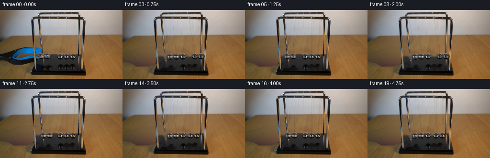
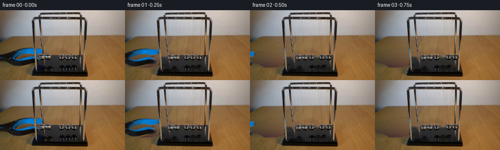
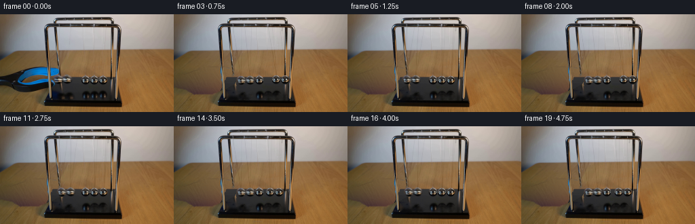
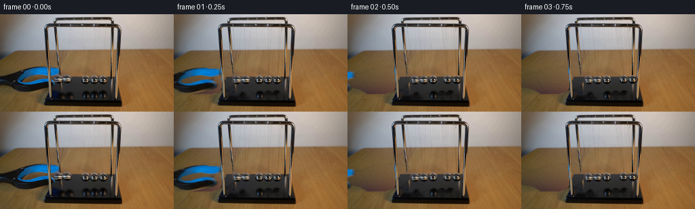

CODING AGENTS AS PIXEL WORLD MODELS
traex/GPT-6.1-Sol · 0053
点击播放 · 原生 RGB 像素
逐轮保存的候选
回放视频、检查图与代码变化。
每份候选均可单独播放。实际图片检查记录在下方工具轨迹中。
候选 01播放与检查图
点击播放 · 原生 RGB 像素


展开代码变化
--- 上一保存版本
+++ 本次保存版本
@@ -0,0 +1,247 @@
+from pathlib import Path
+import numpy as np
+from PIL import Image, ImageDraw
+import cv2
+from scipy.ndimage import gaussian_filter, map_coordinates, median_filter
+import artifact_io
+
+ROOT=Path(__file__).resolve().parent
+W,H=256,144
+SRC=np.asarray(Image.open(ROOT/'first_frame.png').convert('RGB')).copy()
+S=SRC.astype(np.float64)
+Y,X=np.mgrid[:H,:W].astype(float)
+
+def poly(points):
+ im=Image.new('L',(W,H));ImageDraw.Draw(im).polygon(points,fill=255)
+ return np.array(im)/255.
+
+def feather(mask,s=.5):
+ return gaussian_filter(mask.astype(float),s)
+
+def linefield(a,b,width=.45):
+ ax,ay=a;bx,by=b
+ dx=bx-ax;dy=by-ay
+ u=np.clip(((X-ax)*dx+(Y-ay)*dy)/(dx*dx+dy*dy),0,1)
+ d=((X-ax-u*dx)**2+(Y-ay-u*dy)**2)**.5
+ return np.exp(-.5*(d/width)**2)
+
+# Separate the blue/black releasing tool from the fixed apparatus.
+outer=poly([(0,90),(10,89),(20,86),(29,83),(38,80),(47,78),
+ (59,77),(67,77),(72,79),(79,78),(86,79),(88,81),
+ (89,86),(87,89),(81,92),(79,95),(83,101),(82,106),
+ (77,109),(70,111),(59,113),(49,115),(39,115),(29,113),
+ (22,109),(18,107),(8,106),(0,105)])
+hole=poly([(28,98),(32,94),(40,92),(48,90),(55,89),(62,89),
+ (68,90),(72,92),(72,94),(64,94),(56,96),(50,98),
+ (43,100),(34,100),(29,99)])
+rawtool=outer*(1-hole)
+# A circular cutout is made where the steel balls sit in the jaws.
+for cx,cy,r in [(84.4,95.7,6.5),(98.1,95.8,6.7)]:
+ rr=((X-cx)**2+(Y-cy)**2)**.5
+ rawtool*=np.clip(rr-r+.5,0,1)
+
+# The tool was photographed behind the front-left upright. Its thin
+# occluded strip is reconstructed from neighbouring blue/black pixels.
+toolimage=S.copy()
+for y in range(77,113):
+ c=70.4+(y-80)*.097
+ l=int(np.floor(c-2));r=int(np.ceil(c+2.7))
+ for x in range(l,r+1):
+ u=(x-l+1)/(r-l+2)
+ toolimage[y,x]=(1-u)*S[y,max(0,l-1)]+u*S[y,min(W-1,r+1)]
+# Widen matte across the upright so it stays a single solid tool as it moves.
+toolalpha=feather(rawtool,.36)
+
+# Clean brown tabletop texture inferred entirely from the visible tabletop.
+brown=(S[:,:,0]>S[:,:,1]+13)&(S[:,:,0]>S[:,:,2]+27)
+valid=brown&(Y>=57)&(Y<=118)&(X<225)&(outer<.1)
+valid &= ~((X>62)&(X<182)&(Y>88))
+valid &= ~((Y>104)&(X<74))
+x=(X-110)/110.;y=(Y-85)/45.
+B=np.stack([np.ones_like(x),x,y,x*x,x*y,y*y,x*x*x,x*x*y,x*y*y,y*y*y],axis=-1)
+coef=np.linalg.lstsq(B[valid],S[valid],rcond=None)[0]
+table=B@coef
+# Retain the very fine grain of the tabletop using a nearby visible patch.
+res=S-gaussian_filter(S,(2,2,0))
+noise=np.zeros_like(S)
+for yy in range(H):
+ for xx in range(W):
+ yy0=60+(yy%21);xx0=184+(xx%40)
+ noise[yy,xx]=res[yy0,xx0]
+table=np.clip(table+noise*.65,0,255)
+
+plate=S.copy()
+# The soft contact shadow of the withdrawing tool is removed with the tool.
+cleanmask=np.maximum(outer,poly([(0,91),(20,86),(45,77),(72,77),(87,80),
+ (90,102),(74,110),(57,117),(30,118),
+ (18,111),(0,107)]))
+cm=feather(cleanmask,.65)
+# The front rim of the black base lies behind the tool on its right.
+basezone=poly([(77,93),(165,93),(174,111),(176,131),(64,131),(69,112)])
+cm*=1-basezone
+plate=plate*(1-cm[:,:,None])+table*cm[:,:,None]
+# Fill the tool-occluded part of the dark base with its original matte gradient.
+basefix=(cleanmask>.1)&(basezone>.5)&(X<91)&(Y>96)
+for yy in range(97,114):
+ v=np.median(S[yy,108:120],axis=0)
+ # slight lateral falloff in the black, reflective base
+ v=v-np.array([2.0,2.0,2.0])
+ plate[yy,basefix[yy]]=v
+
+# Restore the rear-left chrome leg where the upper jaw had hidden it.
+for yy in range(77,106):
+ c=86.8+(yy-74)*.106
+ yc=66+(yy-77)%9
+ cc=85.5+(yc-62)*.1
+ for xx in range(int(c)-3,int(c)+4):
+ dist=abs(xx-c)
+ a=np.clip((2.2-dist)/.55,0,1)
+ if a:
+ sx=cc+(xx-c)
+ val=np.array([np.interp(sx,np.arange(W),S[yc,:,ch]) for ch in range(3)])
+ plate[yy,xx]=plate[yy,xx]*(1-a)+val*a
+
+# Preserve the photographed foreground upright, not a drawn replacement.
+frontmask=np.zeros((H,W))
+for yy in range(76,123):
+ c=70.25+.100*(yy-80)
+ frontmask[yy]=np.clip((2.1-abs(np.arange(W)-c))/.65,0,1)
+plate=plate*(1-frontmask[:,:,None])+S*frontmask[:,:,None]
+
+# Erase only the mobile balls and their mobile suspension threads.
+centers=[(84.4,95.6),(98.2,95.6),(125.5,97.0),(139.1,97.0),(152.7,97.0)]
+radii=[6.85,7.,6.9,6.85,6.8]
+ballmask=np.zeros((H,W),np.uint8)
+for j in [0,1,3,4]:
+ cx,cy=centers[j];r=radii[j]
+ ballmask[((X-cx)**2+(Y-cy)**2)<(r+1.05)**2]=255
+# Small-hole inpainting uses only local pixels of the plate.
+plate=cv2.inpaint(np.clip(plate,0,255).astype(np.uint8),ballmask,3,cv2.INPAINT_TELEA).astype(float)
+# Remove fine stationary thread traces so that new taut lines do not double.
+paths={0:[((86.2,19),(84.4,89)),((100,10),(84.4,89))],
+ 1:[((104.5,19),(98.2,89)),((113.5,10),(98.2,89))],
+ 3:[((138.5,19),(139.1,90.5)),((144.0,10),(139.1,90.5))],
+ 4:[((156.4,19),(152.7,90.5)),((160,10),(152.7,90.5))]}
+for j in paths:
+ for (ax,ay),(bx,by) in paths[j]:
+ for yy in range(int(ay),int(by)+1):
+ # Keep both rigid top rails and the real table-edge transition.
+ if yy<19 or 51<=yy<=56:continue
+ xx=ax+(bx-ax)*(yy-ay)/(by-ay)
+ lo=int(np.floor(xx-1.35));hi=int(np.ceil(xx+1.35))
+ if j==0 and yy>65:continue # upright, not a suspension thread
+ vals=plate[yy,[lo-2,hi+2]].copy()
+ for q in range(lo,hi+1):
+ if frontmask[yy,q]>.05:continue
+ if j==0 and q<90:continue
+ f=(q-(lo-2))/(hi-lo+4)
+ blend=np.clip(1.65-abs(q-xx),0,1)
+ plate[yy,q]=plate[yy,q]*(1-blend)+(vals[0]*(1-f)+vals[1]*f)*blend
+# Remove mobile reflected highlights beneath the balls and the grabber's blue tint.
+refmask=np.zeros((H,W),np.uint8)
+for cx,cy,rx,ry in [(92,120,7,6),(108,120,7,6),(138.8,120,6.7,5.6),(152,120,6.7,5.6)]:
+ refmask[((X-cx)/rx)**2+((Y-cy)/ry)**2<1]=255
+refmask[(X>=77)&(X<=86)&(Y>=113)&(Y<=125)]=255
+plate=cv2.inpaint(np.clip(plate,0,255).astype(np.uint8),refmask,4,cv2.INPAINT_TELEA).astype(float)
+# Preserve the static centre ball, along with its reflection.
+
+# Source-derived steel sphere atlases, cleaned of blue tool contamination.
+SZ=39
+GY,GX=np.mgrid[:SZ,:SZ].astype(float)
+U=(GX-(SZ-1)/2)/2.;V=(GY-(SZ-1)/2)/2.
+atlases=[]
+for j,(cx,cy) in enumerate(centers):
+ texture=np.stack([map_coordinates(S[:,:,k],[V+cy,U+cx],order=3,mode='nearest') for k in range(3)],axis=-1)
+ if j<2:
+ replacement=np.stack([map_coordinates(S[:,:,k],[V+97.,U+125.5],order=3,mode='nearest') for k in range(3)],axis=-1)
+ bad=(texture[:,:,2]>texture[:,:,0]+18)&(texture[:,:,2]>texture[:,:,1]+12)&(U<-.5)
+ a=gaussian_filter(bad.astype(float),.65)
+ texture=texture*(1-a[:,:,None])+replacement*a[:,:,None]
+ atlases.append(np.clip(texture,0,255))
+
+# Contact-transfer dynamics of a five-ball Newton cradle. The two incoming
+# equal masses exchange momentum with the two at the far end, leaving the
+# centre ball almost still. Each pair is constrained to pendulum arcs.
+L=82.0
+A=np.arcsin(13.1/L)
+period=1.28
+restx=np.array([98.4,112.0,125.5,139.1,152.7])
+resty=np.array([97.,97.,97.,97.,97.])
+frontanchors=[(86.8,17.8),(104.1,17.8),(121.2,17.8),(138.5,17.8),(156.0,17.8)]
+rearanchors=[(99.8,8.5),(114.4,8.5),(128.6,8.5),(143.8,8.5),(159.,8.5)]
+
+def positions(t):
+ phase=2*np.pi*max(0,t-.035)/period
+ c=np.cos(phase)
+ damping=np.exp(-.042*t)
+ angles=np.zeros(5)
+ if c>=0:angles[:2]=-A*c*damping
+ else:angles[3:]=-A*c*damping
+ cx=restx+L*np.sin(angles)
+ cy=resty-L*(1-np.cos(angles))
+ return cx,cy,angles
+
+def ball_layer(img,j,cx,cy,t):
+ r=radii[j]
+ qx=(X-cx)*2+(SZ-1)/2;qy=(Y-cy)*2+(SZ-1)/2
+ tex=np.stack([map_coordinates(atlases[j][:,:,k],[qy,qx],order=3,mode='nearest') for k in range(3)],axis=-1)
+ # A gradual reflection change when the brightly coloured jaws retreat.
+ if j<2:
+ neutral=np.stack([map_coordinates(atlases[2][:,:,k],[qy,qx],order=3,mode='nearest') for k in range(3)],axis=-1)
+ mix=min(.34,t*.5)
+ tex=tex*(1-mix)+neutral*mix
+ rr=np.sqrt((X-cx)**2+(Y-cy)**2)
+ a=np.clip((r+.4-rr)/.78,0,1)
+ img=img*(1-a[:,:,None])+np.clip(tex,0,255)*a[:,:,None]
+ return img
+
+def render(t):
+ img=plate.copy()
+ cx,cy,ang=positions(t)
+ # Subdued reflected balls on the glossy black plinth.
+ for j in [0,1,3,4]:
+ rx=cx[j]-.4;ry=120.3+(97-cy[j])*.25
+ qx=(X-rx)*2+(SZ-1)/2
+ qy=-(Y-ry)*3.7+(SZ-1)/2
+ tex=np.stack([map_coordinates(atlases[j][:,:,k],[qy,qx],order=1,mode='nearest') for k in range(3)],axis=-1)
+ rr=np.sqrt(((X-rx)/6.3)**2+((Y-ry)/3.65)**2)
+ alpha=np.clip((1.05-rr)*3,0,1)*.24
+ ref=tex*.37
+ layer=gaussian_filter(alpha[:,:,None]*(ref-img),(0.8,.65,0))
+ img+=layer
+ # The fine bifilar threads retain their real, low contrast.
+ for j in [0,1,3,4]:
+ for which,a0 in enumerate([rearanchors[j],frontanchors[j]]):
+ end=(cx[j]+(.3 if which==0 else -.25),cy[j]-radii[j]+.2)
+ f=linefield(a0,end,.34)
+ f*=((Y>=19)&(Y<cy[j]-radii[j]+1))
+ strength=11.5 if which else 8.
+ img-=f[:,:,None]*strength
+ for j in [0,1,3,4]:
+ img=ball_layer(img,j,cx[j],cy[j],t)
+ # The jaws release first, then withdraw leftwards without touching the balls.
+ u=np.clip(t/.82,0,1)
+ smooth=u*u*u*(10+u*(-15+6*u))
+ dx=-112*smooth;dy=8*smooth
+ if dx>-101:
+ tx=X-dx;ty=Y-dy
+ a=map_coordinates(toolalpha,[ty,tx],order=1,mode='constant',cval=0)
+ col=np.stack([map_coordinates(toolimage[:,:,k],[ty,tx],order=1,mode='constant',cval=0) for k in range(3)],axis=-1)
+ img=img*(1-a[:,:,None])+col*a[:,:,None]
+ # Foreground structural chrome is rigid and never moves with the tool.
+ img=img*(1-frontmask[:,:,None])+S*frontmask[:,:,None]
+ return np.clip(img,0,255)
+
+frames=[SRC]
+for i in range(1,20):
+ t=i/4
+ # Short real-time shutter: tiny, photographic blur at fastest crossings.
+ samples=[render(t+dt) for dt in [-.008,0,.008]]
+ frames.append(np.clip(np.mean(samples,axis=0).round(),0,255).astype(np.uint8))
+frames=np.stack(frames)
+np.save(ROOT/'.tmp'/'generated_rgb.npy',frames)
+Image.fromarray(np.uint8(np.clip(plate,0,255))).save(ROOT/'.tmp'/'clean_plate.png')
+artifact_io.save(frames,ROOT)
+if __name__=='__main__':
+ assert np.array_equal(frames[0],SRC)
+ print('Saved',frames.shape,frames.dtype,'to',ROOT/'pixels.npz')
候选 02播放与检查图
点击播放 · 原生 RGB 像素


展开代码变化
--- 上一保存版本
+++ 本次保存版本
@@ -91,8 +91,8 @@
# Restore the rear-left chrome leg where the upper jaw had hidden it.
for yy in range(77,106):
c=86.8+(yy-74)*.106
- yc=66+(yy-77)%9
- cc=85.5+(yc-62)*.1
+ yc=71+(yy-77)%6
+ cc=86.8+(yc-74)*.106
for xx in range(int(c)-3,int(c)+4):
dist=abs(xx-c)
a=np.clip((2.2-dist)/.55,0,1)
@@ -117,6 +117,16 @@
ballmask[((X-cx)**2+(Y-cy)**2)<(r+1.05)**2]=255
# Small-hole inpainting uses only local pixels of the plate.
plate=cv2.inpaint(np.clip(plate,0,255).astype(np.uint8),ballmask,3,cv2.INPAINT_TELEA).astype(float)
+# The base's upper surface is a continuous dark surface; local inpainting
+# alone would pull brown table colours into the holes from above.
+for yy in range(92,105):
+ for j in [0,1,3,4]:
+ cx,cy=centers[j];r=radii[j]
+ for xx in range(max(0,int(cx-r-2)),min(W,int(cx+r+3))):
+ if not ballmask[yy,xx]:continue
+ value=np.median(S[yy,108:118],axis=0)
+ value+=np.array([1.,1.,1.])*(xx-110)/55.
+ plate[yy,xx]=value+noise[yy,xx]*.12
# Remove fine stationary thread traces so that new taut lines do not double.
paths={0:[((86.2,19),(84.4,89)),((100,10),(84.4,89))],
1:[((104.5,19),(98.2,89)),((113.5,10),(98.2,89))],
可观测工具轨迹
实际执行的命令与返回图片。
命令 1exit 0
/bin/bash -lc "ls -la && cat prompt.txt && printf '\\n---RULES---\\n' && cat GENERATION_RULES.md"
命令 2exit 0
/bin/bash -lc "cat artifact_io.py && python - <<'PY'
from PIL import Image
import numpy as np
im=np.array(Image.open('first_frame.png'));print(im.shape)
# coarse rgb ascii using quantized colors; luminance ascii
lum=im.mean(2)
s=' .:-=+*#%@'
for y in range(0,144,2):
print(''.join(s[min(9,int(lum[y:y+2,x:x+2].mean()/256*10))] for x in range(0,256,2)))
from collections import Counter
print(Counter(map(tuple,(im//32*32).reshape(-1,3))).most_common(25))
PY"命令 3exit 0
/bin/bash -lc "python - <<'PY'
from PIL import Image
import numpy as np
from scipy.ndimage import label,find_objects
im=np.array(Image.open('first_frame.png')).astype(int)
m=(im[:,:,2]>im[:,:,0]+20)&(im[:,:,2]>im[:,:,1]+10)
l,n=label(m)
for i,sl in enumerate(find_objects(l)):
if sl is not None:
ct=(l[sl]==i+1).sum()
if ct>4: print('blue',ct,sl)
# map ROI with . brown, blue B b, gray luminance digits
for y in range(70,125):
row=''
for x in range(0,190):
r,g,b=im[y,x]
if b>r+20 and b>g+10:c='B' if b>100 else 'b'
elif r>g+15 and r>b+25:c='.'
else:c='0123456789'[min(9,int((r+g+b)/3/256*10))]
row+=c
print(f'{y:3} {row}')
PY"命令 4exit 0
/bin/bash -lc "python - <<'PY'
import numpy as np
from PIL import Image
im=np.array(Image.open('first_frame.png')).astype(int)
for (x0,x1,y0,y1) in [(75,158,86,105),(78,156,12,96),(0,116,70,116)]:
print('\\nROI',x0,x1,y0,y1)
print(' '+''.join(str(x//10%10) for x in range(x0,x1)))
print(' '+''.join(str(x%10) for x in range(x0,x1)))
for y in range(y0,y1):
line=''
for x in range(x0,x1):
r,g,b=im[y,x]
if b>r+20 and b>g+10:c='B'
elif r>g+15 and r>b+25:c='.'
else:c='0123456789'[min(9,int((r+g+b)/3/256*10))]
line+=c
print(f'{y:3} {line}')
PY"命令 5exit 0
/bin/bash -lc "python - <<'PY'
from PIL import Image
import numpy as np
from scipy.ndimage import gaussian_filter
im=np.array(Image.open('first_frame.png')).astype(float)
# differential detail in wall area
lum=im.mean(2); residual=lum-gaussian_filter(lum,2)
print(' '+''.join(str(x//10%10) for x in range(88,163)))
print(' '+''.join(str(x%10) for x in range(88,163)))
for y in range(18,94):
row=''
for x in range(88,163):
v=residual[y,x]
row+= 'X' if v< -15 else 'x' if v < -7 else '-' if v< -3 else '+' if v>6 else ' '
print(f'{y:3} {row}')
print('\\nball region pixels')
for y in [86,89,90,91,92,93,94,95,96,97,98,99,100,101,102,103]:
print(y,' '.join('%d:%s'%(x,tuple(im[y,x].astype(int))) for x in range(78,158,2)))
PY"命令 6exit 0
/bin/bash -lc "python - <<'PY'
import numpy as np
from PIL import Image
from scipy.ndimage import median_filter,gaussian_filter
im=np.array(Image.open('first_frame.png')).astype(float);l=im.mean(2)
for y in [8,12,19,24,30,40,48,55,60,65,70,75,80,84,87]:
print('\\ny',y)
# local low-pass resistant to fine dark strings
bg=median_filter(l[y],size=9)
print([(x,round(l[y,x],1),round(l[y,x]-bg[x],1)) for x in range(88,161) if l[y,x]-bg[x] < -1.5])
PY"命令 7exit 0
/bin/bash -lc "python - <<'PY'
from PIL import Image
import numpy as np
im=np.array(Image.open('first_frame.png'))
for y in [55,60,65,70,75,80,85,90,95,100,105,110,115,120,125,130,135,140]:
print(y,' '.join('%d:%s'%(x,tuple(np.median(im[max(0,y-1):y+2,max(0,x-2):x+3],axis=(0,1)).astype(int))) for x in [2,12,25,40,55,62,78,88,110,180,200]))
PY"命令 8exit 0
/bin/bash -lc "python - <<'PY'
import numpy as np
from PIL import Image
from scipy.ndimage import median_filter
im=np.array(Image.open('first_frame.png')).astype(float)
# path darkest x per row near lines
for y in range(19,89,3):
lum=im[y].mean(1);bg=median_filter(lum,size=9);res=lum-bg
print(y,[(a+np.argmin(res[a:b]),round(np.min(res[a:b]),1)) for a,b in [(92,108),(115,130),(133,143),(149,158)]])
PY"命令 9exit 0
/bin/bash -lc "python - <<'PY' import importlib.util for a in ['numpy','PIL','scipy','cv2']: print(a,bool(importlib.util.find_spec(a))) PY"
命令 10exit 0
/bin/bash -lc "python - <<'PY'
from PIL import Image
import numpy as np
im=np.array(Image.open('first_frame.png'))
for y in range(3,20):
l=im[y].mean(1)
print(y, ''.join('0123456789'[min(9,int(a/256*10))] for a in l[76:162]))
PY"命令 11exit 0
/bin/bash -lc "cat > generate.py <<'PY'
from pathlib import Path
import numpy as np
from PIL import Image, ImageDraw
import cv2
from scipy.ndimage import gaussian_filter, map_coordinates, median_filter
import artifact_io
ROOT=Path(__file__).resolve().parent
W,H=256,144
SRC=np.asarray(Image.open(ROOT/'first_frame.png').convert('RGB')).copy()
S=SRC.astype(np.float64)
Y,X=np.mgrid[:H,:W].astype(float)
def poly(points):
im=Image.new('L',(W,H));ImageDraw.Draw(im).polygon(points,fill=255)
return np.array(im)/255.
def feather(mask,s=.5):
return gaussian_filter(mask.astype(float),s)
def linefield(a,b,width=.45):
ax,ay=a;bx,by=b
dx=bx-ax;dy=by-ay
u=np.clip(((X-ax)*dx+(Y-ay)*dy)/(dx*dx+dy*dy),0,1)
d=((X-ax-u*dx)**2+(Y-ay-u*dy)**2)**.5
return np.exp(-.5*(d/width)**2)
# Separate the blue/black releasing tool from the fixed apparatus.
outer=poly([(0,90),(10,89),(20,86),(29,83),(38,80),(47,78),
(59,77),(67,77),(72,79),(79,78),(86,79),(88,81),
(89,86),(87,89),(81,92),(79,95),(83,101),(82,106),
(77,109),(70,111),(59,113),(49,115),(39,115),(29,113),
(22,109),(18,107),(8,106),(0,105)])
hole=poly([(28,98),(32,94),(40,92),(48,90),(55,89),(62,89),
(68,90),(72,92),(72,94),(64,94),(56,96),(50,98),
(43,100),(34,100),(29,99)])
rawtool=outer*(1-hole)
# A circular cutout is made where the steel balls sit in the jaws.
for cx,cy,r in [(84.4,95.7,6.5),(98.1,95.8,6.7)]:
rr=((X-cx)**2+(Y-cy)**2)**.5
rawtool*=np.clip(rr-r+.5,0,1)
# The tool was photographed behind the front-left upright. Its thin
# occluded strip is reconstructed from neighbouring blue/black pixels.
toolimage=S.copy()
for y in range(77,113):
c=70.4+(y-80)*.097
l=int(np.floor(c-2));r=int(np.ceil(c+2.7))
for x in range(l,r+1):
u=(x-l+1)/(r-l+2)
toolimage[y,x]=(1-u)*S[y,max(0,l-1)]+u*S[y,min(W-1,r+1)]
# Widen matte across the upright so it stays a single solid tool as it moves.
toolalpha=feather(rawtool,.36)
# Clean brown tabletop texture inferred entirely from the visible tabletop.
brown=(S[:,:,0]>S[:,:,1]+13)&(S[:,:,0]>S[:,:,2]+27)
valid=brown&(Y>=57)&(Y<=118)&(X<225)&(outer<.1)
valid &= ~((X>62)&(X<182)&(Y>88))
valid &= ~((Y>104)&(X<74))
x=(X-110)/110.;y=(Y-85)/45.
B=np.stack([np.ones_like(x),x,y,x*x,x*y,y*y,x*x*x,x*x*y,x*y*y,y*y*y],axis=-1)
coef=np.linalg.lstsq(B[valid],S[valid],rcond=None)[0]
table=B@coef
# Retain the very fine grain of the tabletop using a nearby visible patch.
res=S-gaussian_filter(S,(2,2,0))
noise=np.zeros_like(S)
for yy in range(H):
for xx in range(W):
yy0=60+(yy%21);xx0=184+(xx%40)
noise[yy,xx]=res[yy0,xx0]
table=np.clip(table+noise*.65,0,255)
plate=S.copy()
# The soft contact shadow of the withdrawing tool is removed with the tool.
cleanmask=np.maximum(outer,poly([(0,91),(20,86),(45,77),(72,77),(87,80),
(90,102),(74,110),(57,117),(30,118),
(18,111),(0,107)]))
cm=feather(cleanmask,.65)
# The front rim of the black base lies behind the tool on its right.
basezone=poly([(77,93),(165,93),(174,111),(176,131),(64,131),(69,112)])
cm*=1-basezone
plate=plate*(1-cm[:,:,None])+table*cm[:,:,None]
# Fill the tool-occluded part of the dark base with its original matte gradient.
basefix=(cleanmask>.1)&(basezone>.5)&(X<91)&(Y>96)
for yy in range(97,114):
v=np.median(S[yy,108:120],axis=0)
# slight lateral falloff in the black, reflective base
v=v-np.array([2.0,2.0,2.0])
plate[yy,basefix[yy]]=v
# Restore the rear-left chrome leg where the upper jaw had hidden it.
for yy in range(77,106):
c=86.8+(yy-74)*.106
yc=66+(yy-77)%9
cc=85.5+(yc-62)*.1
for xx in range(int(c)-3,int(c)+4):
dist=abs(xx-c)
a=np.clip((2.2-dist)/.55,0,1)
if a:
sx=cc+(xx-c)
val=np.array([np.interp(sx,np.arange(W),S[yc,:,ch]) for ch in range(3)])
plate[yy,xx]=plate[yy,xx]*(1-a)+val*a
# Preserve the photographed foreground upright, not a drawn replacement.
frontmask=np.zeros((H,W))
for yy in range(76,123):
c=70.25+.100*(yy-80)
frontmask[yy]=np.clip((2.1-abs(np.arange(W)-c))/.65,0,1)
plate=plate*(1-frontmask[:,:,None])+S*frontmask[:,:,None]
# Erase only the mobile balls and their mobile suspension threads.
centers=[(84.4,95.6),(98.2,95.6),(125.5,97.0),(139.1,97.0),(152.7,97.0)]
radii=[6.85,7.,6.9,6.85,6.8]
ballmask=np.zeros((H,W),np.uint8)
for j in [0,1,3,4]:
cx,cy=centers[j];r=radii[j]
ballmask[((X-cx)**2+(Y-cy)**2)<(r+1.05)**2]=255
# Small-hole inpainting uses only local pixels of the plate.
plate=cv2.inpaint(np.clip(plate,0,255).astype(np.uint8),ballmask,3,cv2.INPAINT_TELEA).astype(float)
# Remove fine stationary thread traces so that new taut lines do not double.
paths={0:[((86.2,19),(84.4,89)),((100,10),(84.4,89))],
1:[((104.5,19),(98.2,89)),((113.5,10),(98.2,89))],
3:[((138.5,19),(139.1,90.5)),((144.0,10),(139.1,90.5))],
4:[((156.4,19),(152.7,90.5)),((160,10),(152.7,90.5))]}
for j in paths:
for (ax,ay),(bx,by) in paths[j]:
for yy in range(int(ay),int(by)+1):
# Keep both rigid top rails and the real table-edge transition.
if yy<19 or 51<=yy<=56:continue
xx=ax+(bx-ax)*(yy-ay)/(by-ay)
lo=int(np.floor(xx-1.35));hi=int(np.ceil(xx+1.35))
if j==0 and yy>65:continue # upright, not a suspension thread
vals=plate[yy,[lo-2,hi+2]].copy()
for q in range(lo,hi+1):
if frontmask[yy,q]>.05:continue
if j==0 and q<90:continue
f=(q-(lo-2))/(hi-lo+4)
blend=np.clip(1.65-abs(q-xx),0,1)
plate[yy,q]=plate[yy,q]*(1-blend)+(vals[0]*(1-f)+vals[1]*f)*blend
# Remove mobile reflected highlights beneath the balls and the grabber's blue tint.
refmask=np.zeros((H,W),np.uint8)
for cx,cy,rx,ry in [(92,120,7,6),(108,120,7,6),(138.8,120,6.7,5.6),(152,120,6.7,5.6)]:
refmask[((X-cx)/rx)**2+((Y-cy)/ry)**2<1]=255
refmask[(X>=77)&(X<=86)&(Y>=113)&(Y<=125)]=255
plate=cv2.inpaint(np.clip(plate,0,255).astype(np.uint8),refmask,4,cv2.INPAINT_TELEA).astype(float)
# Preserve the static centre ball, along with its reflection.
# Source-derived steel sphere atlases, cleaned of blue tool contamination.
SZ=39
GY,GX=np.mgrid[:SZ,:SZ].astype(float)
U=(GX-(SZ-1)/2)/2.;V=(GY-(SZ-1)/2)/2.
atlases=[]
for j,(cx,cy) in enumerate(centers):
texture=np.stack([map_coordinates(S[:,:,k],[V+cy,U+cx],order=3,mode='nearest') for k in range(3)],axis=-1)
if j<2:
replacement=np.stack([map_coordinates(S[:,:,k],[V+97.,U+125.5],order=3,mode='nearest') for k in range(3)],axis=-1)
bad=(texture[:,:,2]>texture[:,:,0]+18)&(texture[:,:,2]>texture[:,:,1]+12)&(U<-.5)
a=gaussian_filter(bad.astype(float),.65)
texture=texture*(1-a[:,:,None])+replacement*a[:,:,None]
atlases.append(np.clip(texture,0,255))
# Contact-transfer dynamics of a five-ball Newton cradle. The two incoming
# equal masses exchange momentum with the two at the far end, leaving the
# centre ball almost still. Each pair is constrained to pendulum arcs.
L=82.0
A=np.arcsin(13.1/L)
period=1.28
restx=np.array([98.4,112.0,125.5,139.1,152.7])
resty=np.array([97.,97.,97.,97.,97.])
frontanchors=[(86.8,17.8),(104.1,17.8),(121.2,17.8),(138.5,17.8),(156.0,17.8)]
rearanchors=[(99.8,8.5),(114.4,8.5),(128.6,8.5),(143.8,8.5),(159.,8.5)]
def positions(t):
phase=2*np.pi*max(0,t-.035)/period
c=np.cos(phase)
damping=np.exp(-.042*t)
angles=np.zeros(5)
if c>=0:angles[:2]=-A*c*damping
else:angles[3:]=-A*c*damping
cx=restx+L*np.sin(angles)
cy=resty-L*(1-np.cos(angles))
return cx,cy,angles
def ball_layer(img,j,cx,cy,t):
r=radii[j]
qx=(X-cx)*2+(SZ-1)/2;qy=(Y-cy)*2+(SZ-1)/2
tex=np.stack([map_coordinates(atlases[j][:,:,k],[qy,qx],order=3,mode='nearest') for k in range(3)],axis=-1)
# A gradual reflection change when the brightly coloured jaws retreat.
if j<2:
neutral=np.stack([map_coordinates(atlases[2][:,:,k],[qy,qx],order=3,mode='nearest') for k in range(3)],axis=-1)
mix=min(.34,t*.5)
tex=tex*(1-mix)+neutral*mix
rr=np.sqrt((X-cx)**2+(Y-cy)**2)
a=np.clip((r+.4-rr)/.78,0,1)
img=img*(1-a[:,:,None])+np.clip(tex,0,255)*a[:,:,None]
return img
def render(t):
img=plate.copy()
cx,cy,ang=positions(t)
# Subdued reflected balls on the glossy black plinth.
for j in [0,1,3,4]:
rx=cx[j]-.4;ry=120.3+(97-cy[j])*.25
qx=(X-rx)*2+(SZ-1)/2
qy=-(Y-ry)*3.7+(SZ-1)/2
tex=np.stack([map_coordinates(atlases[j][:,:,k],[qy,qx],order=1,mode='nearest') for k in range(3)],axis=-1)
rr=np.sqrt(((X-rx)/6.3)**2+((Y-ry)/3.65)**2)
alpha=np.clip((1.05-rr)*3,0,1)*.24
ref=tex*.37
layer=gaussian_filter(alpha[:,:,None]*(ref-img),(0.8,.65,0))
img+=layer
# The fine bifilar threads retain their real, low contrast.
for j in [0,1,3,4]:
for which,a0 in enumerate([rearanchors[j],frontanchors[j]]):
end=(cx[j]+(.3 if which==0 else -.25),cy[j]-radii[j]+.2)
f=linefield(a0,end,.34)
f*=((Y>=19)&(Y<cy[j]-radii[j]+1))
strength=11.5 if which else 8.
img-=f[:,:,None]*strength
for j in [0,1,3,4]:
img=ball_layer(img,j,cx[j],cy[j],t)
# The jaws release first, then withdraw leftwards without touching the balls.
u=np.clip(t/.82,0,1)
smooth=u*u*u*(10+u*(-15+6*u))
dx=-112*smooth;dy=8*smooth
if dx>-101:
tx=X-dx;ty=Y-dy
a=map_coordinates(toolalpha,[ty,tx],order=1,mode='constant',cval=0)
col=np.stack([map_coordinates(toolimage[:,:,k],[ty,tx],order=1,mode='constant',cval=0) for k in range(3)],axis=-1)
img=img*(1-a[:,:,None])+col*a[:,:,None]
# Foreground structural chrome is rigid and never moves with the tool.
img=img*(1-frontmask[:,:,None])+S*frontmask[:,:,None]
return np.clip(img,0,255)
frames=[SRC]
for i in range(1,20):
t=i/4
# Short real-time shutter: tiny, photographic blur at fastest crossings.
samples=[render(t+dt) for dt in [-.008,0,.008]]
frames.append(np.clip(np.mean(samples,axis=0).round(),0,255).astype(np.uint8))
frames=np.stack(frames)
np.save(ROOT/'.tmp'/'generated_rgb.npy',frames)
Image.fromarray(np.uint8(np.clip(plate,0,255))).save(ROOT/'.tmp'/'clean_plate.png')
artifact_io.save(frames,ROOT)
if __name__=='__main__':
assert np.array_equal(frames[0],SRC)
print('Saved',frames.shape,frames.dtype,'to',ROOT/'pixels.npz')
PY
python generate.py"命令 12exit 0
/bin/bash -lc "python - <<'PY'
import numpy as np
from PIL import Image
f=np.load('.tmp/generated_rgb.npy')
for n in [1,3,6,10]:
print('\\nFRAME',n)
im=f[n].astype(int)
for y in range(76,115):
row=''
for x in range(0,178):
r,g,b=im[y,x]
if b>r+20 and b>g+10:c='B'
elif r>g+15 and r>b+25:c='.'
else:c='0123456789'[min(9,int((r+g+b)/3/256*10))]
row+=c
print(f'{y:3} {row}')
print('frame deltas',[(i,round(float(np.mean(abs(f[i].astype(float)-f[i-1]))),2)) for i in range(1,20)])
PY"命令 13exit 0
/bin/bash -lc "python - <<'PY'
import numpy as np
from PIL import Image
f=np.load('.tmp/generated_rgb.npy');p=np.array(Image.open('.tmp/clean_plate.png'))
# numerical comparison outside dynamic region
s=np.array(Image.open('first_frame.png'))
d=np.max(abs(f[6].astype(int)-s),axis=2)
print('changed upper wall',np.count_nonzero(d[:75]>10),d[:75].max())
print('plate pixel colors left table',[(x,y,tuple(p[y,x]),tuple(s[y,x])) for x,y in [(5,95),(30,95),(50,95),(60,100),(65,110),(80,88),(88,82),(86,95),(98,96),(150,96)]])
# source and generated upright profile
for y in [77,80,85,90,95,105]:
print(y,'src',s[y,67:75].tolist(),'new',f[6,y,67:75].tolist())
PY"命令 14exit 0
/bin/bash -lc "python - <<'PY'
from PIL import Image
import numpy as np
s=np.array(Image.open('first_frame.png'))
for y in [66,68,70,72,74,76,77,104,106,108,110]:
c=86.8+(y-74)*.106
xs=range(int(c)-3,int(c)+4)
print(y,round(c,2),[(x,tuple(s[y,x])) for x in xs])
PY"命令 15exit 0
/bin/bash -lc "python - <<'PY'
from PIL import Image
import numpy as np
s=np.array(Image.open('first_frame.png'))
for y in range(80,99):
print(y,' '.join('%d:%s'%(x,tuple(s[y,x])) for x in range(81,107)))
PY"命令 16exit 0
/bin/bash -lc "python generate.py && python - <<'PY'
from PIL import Image
import numpy as np
from pathlib import Path
f=np.load('.tmp/generated_rgb.npy')
s=np.asarray(Image.open('first_frame.png'))
a=np.load('pixels.npz')['pixels']
assert f.shape==(20,144,256,3)
assert f.dtype==np.uint8
assert np.array_equal(f[0],s)
assert a.shape==(144,256,20)
assert len(list(Path('frames').glob('*.png')))==20
print('Validated RGB frames, exact frame 00, and packed output.')
for i in [0,1,3,8,19]:
im=f[i]
print(i,'bright balls',[(x,int(im[95:99,x-3:x+4].max())) for x in [84,98,112,125,139,152,164]])
PY"保存候选 2 份；完成命令 16 次；可验证图片返回 0 张。原始 API 响应与完整日志保留在本地。